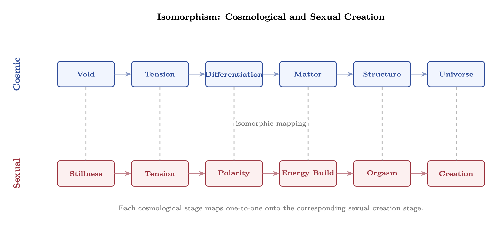

Chapter 7: Biofield and DNA Antenna System
The Adaptive Torsion Transceiver
KEY FINDINGS — Chapter 7: Biofield and DNA Antenna System
Evidence-tier key: see front matter for [L1]–[L4] definitions.
- [L1]DNA’s helical geometry produces measurable THz resonances corresponding to geometric parameters at multiple folding scales, confirmed by Markelz et al. spectroscopy data.
- [L1]Biophoton emission from living systems exhibits non-trivial coherence: anomalous diffusion exponents (Benfatto et al. 2023, INFN Frascati), N=311 coherence-aggression correlation (Pagliaro et al. 2024), and biophoton-tubulin entanglement entropy (Ostovari et al. 2014) collectively establish biophoton phenomena as measurable and biologically significant.
- [L1]Quantum biology is established as a legitimate field across multiple mechanisms — Frohlich condensation (1977), radical pairs, enzymatic tunneling, photosynthetic coherence — confirmed by Royal Society (McFadden & Al-Khalili 2018), multiple L1 surveys (Kim et al. 2021; Lloyd 2011; Lambert et al. 2013), with critical reassessment (Cao et al. 2020) narrowing photosynthetic coherence claims but not the broader framework.
- [L1-L2]Endogenous bioelectric DC fields (Becker 1985, 1990) and their therapeutic manipulation (FDA-approved bone growth stimulation) establish that the body maintains functionally significant electrical fields, supporting the biofield-DNA integration model alongside Levin lab morphogenetic field research.
- [L2]Epigenetic research (Meaney, Yehuda, Kaliman, Bhasin) confirms that coherent practices produce stable DNA modifications, supporting the ratcheting mechanism’s biological substrate.
- [L2]Heart coherence quantitative data (McCraty 2016, HeartMath) provides measured field radii, HRV coherence metrics, and social coherence measurements grounding the heart torus antenna model (Section 7.2.5).
- [L2]The anapole configuration (Papasimakis et al., Nature Materials) — a non-radiating yet locally interactive toroidal multipole — provides an [L1] electromagnetic mechanism explaining why biofields may evade standard far-field detection while remaining biologically active.
- [L3-SPECULATIVE]The magnonic framework mapping condensed matter spin-wave physics onto DNA structure provides a testable but experimentally unverified model for torsion field transduction.
- [L3-SPECULATIVE]The soul-DNA matching model (impedance resonance between soul signature and DNA antenna geometry) is metaphysical and not testable by current experimental methods.
_________________________________
Every receiver needs an antenna. This chapter models the biofield and DNA system as the physical antenna structure that couples the consciousness-RLC receiver to the torsion field, establishing the electromagnetic interface between subtle-energy signal and biological transduction.
7.1 RF Analogy Overview
7.1.1 The Core Concept
Every RF system needs a front-end transducer and an antenna—the components that convert field energy into signals the system can process, and vice versa. Without transduction, the signal exists but cannot be used.
The biofield and DNA together form an adaptive torsion antenna system that:
- 1.
- Receives torsion field patterns (morphic templates)
- 2.
- Transduces them into cellular/biological signals
- 3.
- Broadcasts integrated experience patterns back into the field
- 4.
- Adapts its geometry based on accumulated signal/experience
Framing: This chapter extends the RLC model from Chapter 6, providing a biophysics-level concrete refinement. Where Chapter 6 modeled the soul as a nonlinear RLC circuit determining resonance characteristics, this chapter examines how those characteristics are physically instantiated through DNA and the biofield.
The hierarchy:
- Soul (RLC circuit): The consciousness-level tuned receiver with macro parameters L, C, R determining Q, Z\(_0\), and f\(_0\). These represent system-level characteristics.
- Body/Organism: The physical vessel—biofield, cellular systems, nervous system—through which DNA’s antenna function is expressed and through which experience is processed. The body provides the local field environment (biofield) and the experiential interface that generates novel patterns for rebroadcast.
- DNA (Adaptive antenna): The biophysical mechanism containing all the micro subcomponents and circuits that collectively instantiate the soul’s macro parameters. DNA transduces torsion patterns and locks in impedance gains through geometric reconfiguration.
The soul’s macro RLC parameters (Chapter 6’s system-level view) comprise countless micro parameters distributed throughout DNA’s structure. Soul age (Chapter 6, Section 6.2.8) represents the accumulated macro RLC development across incarnations. DNA is the biological instantiation—the physical antenna whose micro-level configurations aggregate into the soul’s tuned parameters and ratchet those gains into stable geometric configurations.
7.1.2 The Antenna-Shaping Function
Source’s broadcast also shapes the antenna itself. The signal doesn’t just pass through the receiver—it forms and maintains the receiver’s structure. The morphogenetic field contains the blueprint for the very antenna designed to receive it.
This is recursive: transmission shapes receiver \(\relax \to \) receiver receives transmission more clearly \(\relax \to \) further refines receiver \(\relax \to \) …
7.1.3 DNA as TRUE TRANSCEIVER
A critical distinction: DNA is a transceiver (transmitter + receiver), not just a receiver:
Torsion field (templates) \(\relax \to \) DNA receives via helical antenna \(\relax \to \) Experience processed through organism \(\relax \to \) Novel patterns generated through lived experience \(\relax \to \) DNA geometry adapts (ratchets to new configuration) \(\relax \to \) DNA rebroadcasts into torsion field \(\relax \to \) New templates available to other receivers (Akashic accumulation)
The effectiveness of this transceiver loop depends on the local field environment—the biofield—which we examine next.
_________________________________
7.2 The Biofield: Local Torsion/EM Environment
7.2.1 What is the Biofield?
The biofield is the local torsion/electromagnetic field generated by and surrounding the organism:
- Extends DNA’s effective aperture
- Provides the near-field environment for biological processes
- Interfaces between cellular processes and the ambient torsion field
- Coherent biofield = stronger transmission/reception
The biofield is the local component of an ambient torsion field that is itself nonlocal. The organism generates its own torsion field locally while also coupling to the nonlocal ambient field—analogous to how a radio antenna generates a local near-field while coupling to distant transmissions.
7.2.2 Biofield Components
|
Component | Physical Basis | Function |
|
Heart field | Toroidal blood flow, cardiac electrical | Primary torsion generator |
|
Brain field | Neural electromagnetic activity | Information processing interface |
|
Meridian system | Ion gradients, fascia conduction | Field distribution network |
|
Chakra zones | Electromagnetic nodes, nerve plexi | Local field concentrators |
7.2.3 Bioelectric Gradients
The body maintains DC voltage gradients:
- Cell membrane: -70mV (inside negative)
- Organ-level: measurable mV differences
- Whole-body: head-to-foot potential
This gradient is the DC bias that sets the operating point: \[ V_{operating} = V_{bias} + v_{signal}(t) \] Disrupted gradients (injury, disease) shift the operating point, changing transduction efficiency.
7.2.4 The Transduction Equation
General transduction from torsion field \(T\) to biological signal \(B\): \[ B(t) = \int \eta _T(\omega ) \cdot T(\omega ) \cdot e^{j\omega t} \, d\omega \] Where \(\eta _T(\omega )\) is the torsion transduction efficiency—the frequency-dependent effectiveness of converting torsion field to biological signal.
7.2.5 The Heart Torus as Three-Dimensional Antenna
Omnidirectional Coverage
The heart generates the strongest electromagnetic field in the human body — approximately 5,000 times stronger than the brain’s field, measurable several feet from the body by magnetocardiography (McCraty et al., 2009). This field is not dipolar. It forms a toroidal geometry, with field lines emerging from the heart, arching outward in all directions, and returning through the base — the three-dimensional torus described in Chapter 0, §0.3.4.
A dipole antenna has nulls — directions of zero radiation (along the axis of the dipole). A planar array can beam in a half-space but has no coverage behind the ground plane. The heart torus, by contrast, provides omnidirectional three-dimensional coverage: every direction in space is illuminated by the toroidal field. This makes the heart the body’s primary isotropic radiator — the antenna element that ensures no direction is unmonitored.
In RF engineering, achieving omnidirectional 3D coverage requires either an isotropic radiator (theoretically impossible for a single antenna element) or a conformal antenna wrapped around a closed surface. The heart torus is the biological implementation of the latter — a conformal antenna whose radiating surface is the toroidal field itself.
Chakra Array + Heart Torus = Complete 3D System
Chapter 10 (§10.2) describes the seven-chakra system as a linear phased array along the spinal axis. A linear array produces a beam pattern with one degree of steering freedom — it can scan in the plane containing the array axis but has rotational symmetry around it. This gives the chakra system two-dimensional beamforming capability: selective tuning to different frequency bands (via chakra selection) and elevation-angle steering (via inter-chakra phase progression).
The heart torus adds the missing dimension. Its toroidal field is orthogonal to the spinal axis, providing azimuthal coverage that the linear chakra array lacks. Together:
- Chakra linear array: Directional gain + frequency selectivity (2D beamforming in the meridional plane)
- Heart torus: Omnidirectional azimuthal coverage (fills the 3D gaps)
- Combined: Complete 3D antenna system with both directional capability (when focusing through specific chakras) and omnidirectional awareness (through the heart’s toroidal field)
This dual architecture parallels modern radar systems that combine a directional scanning array (for target tracking) with an omnidirectional warning receiver (for situational awareness). The heart provides the 360\(\relax ^\circ \) “early warning” function; the chakra array provides the focused “tracking” function.
HRV Coherence as Torus Quality Factor
HeartMath Institute research has established that heart rate variability (HRV) coherence — a state where the HRV power spectrum shows a sharp peak near 0.1 Hz — correlates with enhanced emotional regulation, cognitive performance, and interpersonal synchronization (McCraty & Zayas, 2014).
In the antenna framework, HRV coherence is the quality factor of the heart torus. The Q factor of any resonant system measures the ratio of energy stored to energy dissipated per cycle:
\[Q_{heart} = 2\pi \frac {E_{stored}}{E_{dissipated/cycle}} = \frac {f_0}{\Delta f}\]
where \(f_0 \approx 0.1\) Hz is the coherence frequency and \(\Delta f\) is the bandwidth of the HRV spectral peak. High HRV coherence = narrow spectral peak = high Q:
- High Q (coherent state): Tight, well-formed torus with stable geometry. Strong, coherent field extending far from the body. Efficient energy coupling to external fields (other hearts, environmental torsion).
- Low Q (incoherent state): Diffuse, unstable torus that fluctuates in shape and orientation. Weak, noisy field with short range. Poor coupling efficiency.
This connects to the Q-sovereignty model of Chapter 6 (§6.2.6): the heart torus Q is a measure of the individual’s coherence as an antenna element, not just a cardiac health metric. The HeartMath “quick coherence” technique — which raises HRV coherence through focused positive emotion — is, in engineering terms, a procedure for raising the Q of the heart torus, thereby improving both reception sensitivity and transmission range.
The heart’s role as the primary antenna element also explains why emotional state so strongly affects consciousness dynamics: the heart torus is the largest, strongest field in the biofield system, and its Q (set by emotional coherence) dominates the overall system Q. A high-Q heart torus raises the effective Q of the entire chakra-torus antenna system; a low-Q heart degrades it regardless of the state of other elements.
Cross-references: Chapter 0 §0.3.4 (toroidal geometry foundation), Chapter 6 §6.2.6 (Q-sovereignty), Chapter 10 §10.2 (chakra phased array), Chapter 10 §10.2.3 (toroidal beamforming in groups).
_________________________________
7.3 DNA as Adaptive Helical Antenna
7.3.1 DNA Antenna Geometry
The DNA double helix is a natural helical antenna:
|
Parameter | DNA Value | Antenna Implication |
|
Length | ~2m per cell (extended) | Large effective aperture |
|
Pitch | 3.4 nm per turn | THz-range primary resonance |
|
Diameter | 2 nm | Determines circumference/wavelength ratio |
|
Turns | ~200 million | High gain potential |
|
Phi ratio | 34Å pitch / 21Å diameter \(\approx \) \(\phi \) | Optimal information packing |

7.3.2 Fractal Bandwidth Extension
DNA’s recursive coiling (helix \(\relax \to \) nucleosome \(\relax \to \) chromatin \(\relax \to \) chromosome) creates fractal antenna geometry: \[ BW_{total} = BW_0 \cdot \sum _{n=0}^{N} \alpha ^n \] Each folding level contributes additional bandwidth at progressively lower frequencies:
| Folding Level | Structure | Added Frequency Range |
| Primary | Double helix | THz-PHz |
| Secondary | Nucleosome | GHz |
| Tertiary | 30nm fiber | MHz |
| Quaternary | Chromatin loop | kHz |
| Chromosome | Condensed | Hz |
This allows reception across a broad range of torsion frequencies—from molecular (THz) to consciousness-scale (Hz).
Audio bridge. DNA’s fractal antenna geometry works like a studio monitor with multiple driver sizes. A tweeter handles high frequencies, a mid-range driver handles the middle, and a woofer handles the lows — each driver is a different physical scale optimized for a different frequency band. DNA’s recursive coiling achieves the same multi-band coverage in a single structure: the primary helix is the tweeter (THz), nucleosome folding is the mid-range (GHz), and chromosome-scale condensation is the subwoofer (Hz). Just as a full-range monitor reproduces the entire audible spectrum, fully expressed DNA geometry receives across the entire torsion spectrum.
7.3.3 Torsion Generation and Reception
DNA’s helical geometry is optimized for torsion field interaction:
- Generation Rotating charge distributions along the helix create torsion fields
- Reception Torsion field patterns induce vibrational modes in the helix
- 9.5 base pairs per turn Creates specific torsion frequency signature
- Fractal folding Multi-scale torsion resonances
Dual coupling mechanism:
- EM coupling — Local, speed-of-light limited (biological processes)
- Torsion coupling — Nonlocal in the model framework (see Chapter 0 for the distinction between torsion-as-Einstein-Cartan and torsion-as-consciousness-field)
DNA uses BOTH simultaneously. This explains phenomena like Gariaev’s “wave genetics” results (if validated).
Section 3 established DNA’s geometric properties as an antenna. What follows models the electrical and magnonic behavior that this geometry produces—mapping antenna characteristics to circuit parameters (L, C, R) that determine resonance, selectivity, and impedance matching.
_________________________________
7.4 DNA as Magnonic RLC Antenna: The Biophysical Framework
7.4.1 Framework Overview: DNA as Magnonic Transducer
Core thesis: The human DNA complex is a magnonic transducer—an RLC antenna interfacing the individual body with the soul and, through the soul, with the universal torsion field. DNA and soul form a matched pair: specific genetic configurations resonate with specific soul signatures. This soul-DNA pairing explains the historical power of bloodlines—DNA is the key that unlocks access to advanced soul characteristics. Spiritual evolution = impedance matching engineering.
This framework is the biophysical instantiation of Chapter 6’s soul RLC model. Where Chapter 6 describes the consciousness-level parameters, this section details how those parameters manifest through DNA’s mechanical and electromagnetic properties.
What “magnonic” means here: In condensed matter physics, magnons are quantized spin waves—collective excitations propagating through ordered magnetic lattices. DNA’s helical charge distribution, with its rotating electron densities and hydrogen-bond networks, creates a quasi-ordered spin system through which collective excitations can propagate. We extend the magnonic framework analogically: DNA’s double helix acts as a spin-wave waveguide where torsion-coupled spin excitations behave like magnons in a crystal lattice.
Model Note: This magnonic framing is an analogical extension from condensed matter physics to biophysics. The mathematical parallels (spin stiffness \(\leftrightarrow \) inductance, anisotropy \(\leftrightarrow \) capacitance, damping \(\leftrightarrow \) resistance) are physically motivated by DNA’s helical geometry, but direct experimental confirmation of magnonic propagation in biological DNA remains to be demonstrated. The framework is chosen for its explanatory power and testability, not claimed as established biophysics.
Epistemic note [L2-L3]: The magnonic framework maps condensed matter physics concepts onto DNA structure. While spin waves in solid-state systems are well-established, their application to biological DNA is speculative and experimentally unverified.
Key parameter mapping:
|
Parameter | Electrical (RLC) | Mechanical | Magnonic (Spin Lattice) | System-Level Correlate |
|
L (Inductance) | Energy storage in magnetic field | Mass/moment of inertia | Exchange interaction/spin stiffness | Soul Age — accumulated incarnational momentum; internal spin coherence |
|
C (Capacitance) | Energy storage in electric field | Compliance (1/K, spring flexibility) | Dipolar interaction/magnetic anisotropy | Shadow Age — capacity to absorb distortion; potential for external coherence |
|
R (Resistance) | Energy dissipation as heat | Viscous damping | Gilbert damping/phonon coupling | Dimensional Density — frictional decoherence of the density tier |
These system-level correlates emerge from the aggregation of DNA’s micro-level parameters. Soul Age, for instance, is not a property of any single DNA configuration but the accumulated macro parameter arising from many micro-level geometric states across incarnations.
DNA provides the physical antenna whose parameters are shaped by soul age (L), shadow integration (C), and environmental density (R).
Soul-DNA resonance matching: The soul-DNA pairing is not arbitrary. A soul’s macro impedance signature (its accumulated L and C from prior incarnations) must fall within the matching bandwidth of the body’s DNA antenna. DNA with high-Q geometry (complex folding, high fractal depth) can couple to souls with correspondingly high Z\(_0\)—but a low-Z\(_0\) soul placed in high-Q DNA would experience impedance mismatch, manifesting as developmental instability or psychological fragmentation. Conversely, a high-Z\(_0\) soul in low-Q DNA cannot express its full bandwidth.
This matching constraint explains the observed power of bloodlines: lineages that have maintained specific genetic configurations (through selective reproduction, environmental adaptation, or deliberate breeding programs) preserve DNA antenna geometries capable of coupling to specific soul impedance bands. The DNA doesn’t create the soul’s characteristics—it provides the antenna geometry that allows those characteristics to manifest in physical expression. A lineage’s “power” is its DNA’s Q factor and bandwidth, determining which souls can incarnate through it and how much of their accumulated Z\(_0\) can be expressed.
This has a testable implication: genetic diversity within a bloodline should correlate with the range of soul impedance signatures it can support, while genetic bottlenecks should narrow the matching bandwidth, producing lineages specialized for particular impedance bands.
Epistemic note [L3]: The soul-DNA matching model is metaphysical and not testable by current experimental methods.
7.4.2 The Helix as Primordial Motion: Spin-Wave Coupling
The helix is the inseparable union of spin (rotational coherence) and wave (rhythmic propagation). DNA’s double helix is frozen light—helical waves slowed and stabilized into apparent solidity.
Building on the geometric properties established in Section 3 (counter-wound strands, toroidal embedding, biophoton emission), we now examine how these structures support spin-wave propagation.
The aggregate of ~200 million turns per cell produces a coherent torsion antenna with very high gain. Each turn creates a microscopic torsion vortex; the collective spin-wave coupling along the helix enables coherent propagation of torsion-coupled excitations across the full length of the DNA molecule.
The helix’s torsion-generating geometry is not fixed—its mechanical properties can be dynamically reconfigured through chromatin topology changes, providing a built-in tuning mechanism.
7.4.3 Variable Stiffness (k): Chromatin Topology as Antenna Tuner
The critical new concept: Mechanical topology (stiffness k of the chromatin network) is the primary “antenna tuner”—directly modulating resonance with torsion modes.
The dual system:
- Topology (k) = TUNER — sets the base resonant frequency by mechanical reconfiguration
- Impedance (Z\(_0\)) = MATCHING NETWORK — optimizes energy transfer once the tuner allows access
Stiffness dynamics:
|
Stiffness State | Configuration | Torsion Access | Consciousness Correlate |
|
High k | Compacted loops, overwound supercoils | Narrow bandwidth, low-frequency/localized modes | Egoic emotion, survival consciousness |
|
Low k | Fluid unwinding, open domains | Broad receptivity to high-frequency/nonlocal torsions | Unity consciousness, oversoul downloads |
Mechanisms for k modification:
- Phase transitions in chromatin (twist-to-writhe buckling, B-to-Z DNA flips)
- Topoisomerase activity dynamically adjusting windings
- Epigenetic marks encoding torsional “memory” (e.g., histone acetylation reducing local rigidity)
- Biophoton feedback loops stabilizing unwinding
Torsion-emotion connection: Low-frequency torsions (discordant thoughts, emotional chaos) maintain high k; high-frequency modes (coherent intent, love-based emotions) soften k. This is the biophysical mechanism for why emotional coherence enables expanded perception.
7.4.4 The Adaptive Antenna with Hysteresis
In RF engineering, an adaptive antenna adjusts its parameters based on the signal environment. DNA extends this concept with geometric lock-in (hysteresis/ratcheting).
We use “lock-in” to describe the discrete geometric reconfiguration event and “ratcheting” to describe the cumulative directional process—each lock-in event ratchets the system to a higher impedance floor.
Standard adaptive antenna: Adjusts \(\relax \to \) optimal reception \(\relax \to \) can readjust when signal changes
DNA adaptive antenna: Adjusts \(\relax \to \) optimal reception \(\relax \to \) locks geometry \(\relax \to \) new baseline
Key differences:
- Changes lock in—don’t regress when signal removed
- This is the “can’t unsee” phenomenon of awakening
- DNA activation = geometric reconfiguration that stabilizes at new state
- Locked geometry = permanent upgrade
7.4.5 Fractal Ratcheting: Lock-In Mechanics
Why fractal topology enables ratcheting:
- Self-similar hierarchies create rugged energy landscapes
- Low torsions trap in local minima (stiff, closed states)
- High-frequency inputs cascade through scales via cooperative unwinding
- Metastable highs have energy barriers against backsliding (directed percolation)
Topological invariants:
- Knot-like supercoils preserve twist numbers
- Enzymatic “cuts” required for reversal creates natural hysteresis
- Self-similarity distributes torque unevenly \(\relax \to \) avalanches where small inputs trigger global shifts
How DNA locks in Z\(_0\) gains:
- 1.
- Experience/practice causes conformational changes in DNA (methylation, histone modification, chromatin remodeling)
- 2.
- Certain thresholds trigger stable geometric reconfigurations
- 3.
- New geometry enables reception of previously inaccessible frequencies/patterns
- 4.
- Locked geometry = impedance floor raised permanently \[ Z_{0,new} = \max (Z_{0,current}, Z_{0,threshold}) \] Once Z\(_0\) crosses an activation threshold, the new floor is locked:
| Activation Level | Z\(_0\) Floor | Capability |
| Baseline | Z\(_1\) | 3D perception only |
| Partial (0.3) | ~5 Z\(_1\) | 3D-4D transition access |
| Significant (0.6) | ~25 Z\(_1\) | 4D stable access |
| Full (0.9+) | ~125 Z\(_1\) | 5D access capability |
These activation levels and their Z\(_0\) ratios are illustrative, representing the model’s predicted scaling behavior. Empirical calibration of specific thresholds requires measurement of DNA geometric states correlated with reported capacity changes. The 5x scaling factor between levels is a modeling choice reflecting geometric progression; no empirical calibration exists for these specific ratios.
The ratchet is a Q factor increase—each lock-in sharpens resonance while building antifragile stability.
The threshold equation: \[ P_{activation} = S\left (\int _0^T I_{coherent}(t) dt - \theta _{threshold}\right ) \] Where \(S(\cdot )\) = sigmoid function, I_coherent = coherent signal intensity, \(\theta \)_threshold = activation threshold.
The sigmoid captures the probability of activation: as cumulative coherent exposure approaches the threshold, activation probability increases smoothly, but the geometric reconfiguration itself is a discrete phase transition—analogous to how temperature increases continuously but ice-to-water transition is abrupt. Once cumulative coherent exposure exceeds threshold, geometric reconfiguration triggers and locks.
7.4.6 What Triggers Geometric Reconfiguration
Accumulated signal/coherent states:
- Sustained meditation practice
- Intensive shadow work / trauma processing
- Intense experiences (mystical states, NDEs)
- Coherent group field exposure
7.4.7 Soul Age Profiles: Impedance Characteristics Across Development
Different soul ages manifest distinct impedance characteristics through their DNA antenna systems:
Young/Unactivated Souls:
- Low impedance (leaky broadband reception)
- High/variable k (clamped mechanical response)
- Prone to emotional overwhelm, rapid discharge through reactivity
- BUT: grants fluidity, movement, broad-spectrum engagement
- Properly tuned: excel as actors, athletes, aesthetes
Mature but Unactivated:
- High innate impedance (soul-refined C/L for minimal leakage)
- High k (unresolved vessel baggage blocking full expression)
- Gravitational presence without full activation
- Resistant to external capture but not fully transmitting higher torsion
Fully Activated Mature Souls:
- High impedance (selective, stable matching)
- Low k (fluid topology)
- Precision narrowband reception with expansive access when needed
- Antifragile ratcheting against entropy or external interference
- Magnetic, gravitational fields drawing coherence without bleed
7.4.8 Ascension as Impedance Matching: The Smith Chart Model
The engineering framing: Evolution = disciplined expansion of L (internal coherence) and C (external potential) until Z\(_0\)_soul matches the current environment’s impedance band, unlocking access to the next.
The Smith Chart, used in RF engineering to visualize impedance matching, maps directly onto spiritual development. It plots impedance on a circular graph where the center is perfect matching (no reflected power) and distance from center is the degree of mismatch—a visual map of how far a system is from optimal energy transfer. The chart’s center is 1:1 SWR (standing wave ratio)—perfect matching.
Mismatched state (high SWR):
- Intent reflects back as standing waves
- Manifests as stuckness, ego flares, burnout, apathetic stagnation
- Energy wasted in reflections rather than transmission
Matched state (1:1 SWR):
- 100% power transfer
- Intent and manifestation become phase-coherent
- Reflected power drops to zero \(\relax \to \) lossless propagation
- Experienced as effortless synchronicity, transparent channeling
Ascension = perfect impedance matching: Reaching the center of the Smith Chart (1:1 SWR) at the current level, which unlocks access to the next higher impedance/power band of Source broadcast. Each matched state becomes the foundation for tuning to the next octave.
This impedance-matching framework has a physical substrate: DNA’s chromatin topology is the mechanism through which matching is achieved.
7.4.9 Chapter Integration: DNA Activation as Mechanical Reality
DNA activation is mechanical, not metaphorical: geometric reconfiguration of chromatin topology. The ratchet mechanism locks in permanent upgrades (the “can’t unsee” phenomenon).
Ascension proceeds through:
- 1.
- Increasing L (soul age increases across incarnations; within a single lifetime, L manifests as the starting impedance floor that practices can build upon)
- 2.
- Increasing C (shadow integration, compliance with full spectrum of experience)
- 3.
- Tuning k (chromatin fluidity through practices)
This connects to:
- Chapter 6’s soul age progression table — DNA provides the physical substrate
- Chapter 10’s phased array model — Coherent DNA arrays across population enable collective effects
Evidence status for the magnonic RLC model: The geometric antenna properties (Section 7.3) are supported by THz spectroscopy (Section 7.7.3) and biophoton research (Section 7.7.1). The biofield model (Section 7.2) is supported by heart coherence studies (Section 7.7.4) and bioelectric regeneration research (Section 7.7.2). The magnonic RLC framework (this section) is a theoretical extension: the parameter mappings (L\(\leftrightarrow \)soul age, C\(\leftrightarrow \)shadow integration, R\(\leftrightarrow \)density) are analogical constructs that generate testable predictions (Section 7.8) but lack direct empirical calibration. The ratcheting mechanism is indirectly supported by epigenetic evidence (Section 7.7.8) showing stable DNA modifications from practice.
_________________________________
7.5 DNA as Transmitter: The Rebroadcast Loop
7.5.1 What DNA Transmits Back
Integrated experience patterns:
- 1.
- Solutions discovered through embodied life
- 2.
- Novel pattern combinations from unique perspective
- 3.
- Emotional/energetic signatures of experiences
- 4.
- Synthesized templates not present in original reception
7.5.2 Transmission Mechanism
Torsion field generation from helix:
The rotating charge distribution along DNA’s helical axis creates torsion: \[ \vec {T}_{DNA} = \kappa \int \vec {r} \times \vec {J}(\vec {r}) \, d^3r \] Where \(\vec {J}\) = current density from charge motion along helix, \(\kappa \) = torsion coupling constant.
Coherent states amplify transmission:
- Strong emotional coherence \(\relax \to \) aligned spin states \(\relax \to \) stronger torsion
- Repeated patterns \(\relax \to \) reinforced standing waves \(\relax \to \) stronger broadcast
- Integration events \(\relax \to \) phase-locked states \(\relax \to \) constructive addition
7.5.3 Contribution to Morphic Field
Model Note: The following represents a qualitative model based on RF rebroadcast mathematics. In conventional RF engineering, rebroadcast systems aggregate multiple transmitter contributions with coupling coefficients and decay terms. We apply this established framework to morphic field dynamics, with the explicit caveat that the coupling constants (\(\alpha \), \(\beta \)) and their biological correlates remain to be empirically determined. The mathematical form is chosen for its physical plausibility, not claimed precision.
Epistemic note [L3]: The morphic field rebroadcast model extends Sheldrake’s hypothesis, which remains outside mainstream scientific consensus. The mathematical formalization is self-consistent but the underlying phenomenon is contested.
DNA broadcasts contribute to the collective field: \[ \frac {dM_T}{dt} = \sum _{i=1}^{N} \alpha _i \cdot T_{DNA,i} - \beta M_T \] Where:
| Variable | Description |
| \(M_T\) | morphic template strength |
| \(T_{DNA,i}\) | transmission from individual i |
| \(\alpha _i\) | coupling strength (depends on coherence) |
| \(\beta \) | decay rate |
Each organism’s DNA continuously adds to the collective Akashic accumulation.
_________________________________
7.6 Biofield-DNA Integration
7.6.1 The Nested System
Ambient Torsion Field \(\relax \to \) Biofield (local field environment) \(\relax \to \) DNA (core antenna) \(\relax \to \) Cellular/biological expression
Biofield functions:
- Extends DNA’s effective aperture
- Provides coherent local environment
- Heart field = primary torsion generator
DNA functions:
- Receives and demodulates patterns
- Adapts geometry based on signal
- Rebroadcasts integrated experience
7.6.2 Biofield Enhances DNA Function
Coherent biofield improves DNA antenna performance:
|
Biofield State | DNA Function |
|
Coherent (high HRV, heart coherence) | Sharp reception, clear transmission |
|
Incoherent (stress, fragmentation) | Noisy reception, weak transmission |
|
Entrained (group coherence) | Extended aperture, N\(^2\) power |
Practices that strengthen biofield \(\relax \to \) better DNA antenna performance:
- Heart coherence training
- Breathwork (coherent breathing patterns)
- Meditation (reduced noise)
- Group practice (field entrainment)
7.6.3 The Recursive Loop
The biofield-DNA system is recursive:
- 1.
- DNA shapes biofield: Gene expression determines body structure, field generators
- 2.
- Biofield shapes DNA access: Coherent field enables clearer DNA reception
- 3.
- Clearer reception: Enables DNA adaptive reconfiguration
- 4.
- Reconfigured DNA: Broadcasts stronger/clearer into biofield
- 5.
- Enhanced biofield: Further improves DNA access
- 6.
- Spiral evolution: Each cycle can ratchet to higher baseline
The biofield-DNA integration model generates specific claims about DNA’s antenna function, biofield coherence, and torsion coupling. The next section examines the empirical evidence bearing on these claims.
_________________________________
7.7 Evidence Synthesis
7.7.1 Biophoton Research
Van Wijk & Van Wijk (2005) [L2]
- Foundational review of biophoton emission (Utrecht University, Forsch Komplementarmed) covering detection methods, source mechanisms, coherence properties, biological regulation, and health correlates. Establishes the methodological framework for quantitative UPE measurement that subsequent studies build upon. See also Van Wijk (2001) (Journal of Scientific Exploration), which traces the 80-year research lineage from Gurwitsch’s mitogenetic rays through the photomultiplier detection era, framing biophoton emission as a bio-informational and bio-communication phenomenon — directly supporting the transceiver model developed in Section 7.5.
Benfatto et al. (2023) [L1]
- Experimental ultra-weak photon emission from germinating seeds measured at INFN Frascati National Laboratory using intensified CCD (Entropy 25, 2023). Measured anomalous diffusion exponent \(\eta \neq 0.5\), indicating non-Brownian photon emission dynamics. This quantitative result from a national laboratory provides direct [L1] evidence that biophoton emission is not simply thermal noise but exhibits coherent statistical properties consistent with organized biological information processing.
Pagliaro et al. (2024) [L2]
- 311-person study measuring biophoton coherence and psychological correlates (J Quantum Sci Consciousness, 2024). Found \(\rho = -0.43\) correlation between biophoton coherence and aggression. This is the largest-N biophoton coherence study in the literature to date, providing quantitative evidence that biophoton emission reflects psychological/emotional state — supporting the model’s claim that biofield coherence correlates with consciousness state (Section 7.6.2).
Ostovari et al. (2014) [L2]
- Von Neumann entropy calculation for quantum entanglement between biophotons and tubulin dimers in microtubules (\(S = -\mathrm {Tr}(\rho \log \rho )\) applied to the biophoton-tubulin system; NeuroQuantology, 2014). Provides a quantitative entanglement framework linking biophoton emission to microtubule quantum coherence, bridging this chapter’s biophoton evidence to Chapter 6’s RLC consciousness model.
Popp et al. (1984-2000) [L1] — Documented ultra-weak photon emission (1-1000 photons/cm\(^2\)/sec, 200-800 nm) from all living cells, with DNA identified as the primary source exhibiting coherent temporal patterns. This establishes that biological systems emit organized light, providing the empirical foundation for the biophoton-as-torsion-readout interpretation central to the transceiver model of Section 7.5. (Full entry in Appendix B §D.10)
Gurwitsch (1923) [L1] — Demonstrated that cells separated by quartz (UV-transparent) but not glass induced mitosis in adjacent cells, establishing the first evidence for non-chemical biological communication via photon emission. This foundational experiment is the earliest direct evidence for the biofield communication channel that this chapter models as a torsion transceiver. (Full entry in Appendix B §D.10)
Fels (2009) [L2] — Showed that cells separated by quartz exhibit correlated metabolic changes, extending Gurwitsch’s original finding with modern instrumentation. This replication confirms that biophoton-mediated cell-to-cell communication is robust and reproducible, strengthening the case for organized biological light emission as an information channel rather than metabolic waste. (Full entry in Appendix B §D.10)
7.7.2 Bioelectric Regeneration
Becker (1985, 1990) [L1]
Robert O. Becker’s two foundational works — The Body Electric (1985, with Selden) and Cross Currents (1990) — provide the most comprehensive experimental documentation of endogenous bioelectric fields in the literature. Key findings:
- DC electrical control systems in living organisms: millivolt-scale endogenous DC fields measured along nerves and at wound sites, with characteristic “current of injury” signatures
- Peristalsis of electrons through semiconducting proteins in the perineural DC control system — a non-neural information channel operating alongside the nervous system
- FDA-approved clinical electromedicine: applied electrical currents accelerating bone growth (now a standard orthopedic treatment), demonstrating that the body’s fields are not epiphenomenal but functionally significant
Becker (twice nominated for Nobel Prize) provides [L1] peer-reviewed evidence, published in Science and Nature, that the body maintains measurable electrical fields that can be therapeutically manipulated. His DC body electric model maps directly onto this chapter’s biofield framework (Section 7.2.3) and onto Chapter 6’s RLC circuit model, where the DC bias sets the operating point for consciousness dynamics.
Levin Lab research provides the strongest [L1] experimental evidence for bioelectric morphogenetic control. Key demonstrations — voltage-gradient-dependent cell morphology, two-headed planaria via ion channel manipulation independent of DNA sequence, and functional eye induction on tadpole tails via altered voltage patterns — establish that the bioelectric field carries morphogenetic information that overrides genomic instructions. Becker’s DC field measurements (salamander regeneration, FDA-approved bone growth stimulation, cancer depolarization signatures) provide additional [L1] confirmation. Levin (2021) reviews the full bioelectric network framework, and Levin & Dennett (2020) [L2] extend the analysis to collective intelligence at cellular and molecular scales — supporting the model’s claim that information processing is distributed through bioelectric networks, not confined to neural systems. (Full entry in Appendix B §D.10)
Levin (2021) [L1] — Reviews the full bioelectric network framework, establishing that voltage gradients function as a morphogenetic code independent of DNA sequence. This is the most direct evidence that biological information is encoded in field patterns, not solely in molecular structure — the central claim underlying the biofield transceiver model. (Full entry in Appendix B §D.10)
Levin & Dennett (2020) [L2] — Argue that cognition operates “all the way down” at cellular and molecular scales, with collective intelligence emerging from distributed bioelectric computation. This extends the biofield model beyond the nervous system, supporting the chapter’s claim that the DNA antenna operates within a body-wide information-processing network. (Full entry in Appendix B §D.10)
7.7.3 THz Spectroscopy of DNA
Markelz et al. (2000-2010) [L1] established that DNA shows characteristic absorption at 1-3 THz with sequence dependence and hydration sensitivity — calculated resonant frequencies from geometry match observed absorption, and chromatin folding creates resonances at progressively lower frequencies, supporting the fractal antenna model. Subsequent work has strengthened this foundation: Chou et al. (2020s) demonstrate DNA phononic waveguide properties supporting the magnonic framework; Turton et al. (2014) [L1] show collective vibrational modes in biomolecules coupled to hydration shell dynamics (Nature Communications); and Gonzalez-Jimenez et al. (2016) [L1] measure picosecond-scale water dynamics around DNA via optical Kerr effect spectroscopy, confirming that water actively mediates coupling between DNA’s vibrational modes and the surrounding field.
Markelz et al. (2000-2010) [L1] — DNA shows characteristic THz absorption at 1-3 THz that is sequence-dependent and hydration-sensitive. The geometry-to-frequency correspondence directly supports the fractal antenna model: DNA’s physical structure determines its resonant reception frequencies, exactly as predicted by the magnonic framework. (Full entry in Appendix B §D.10)
Chou et al. (2020s) [L2] — Demonstrated that DNA functions as a phonon waveguide, supporting the magnonic spin-wave transport mechanism proposed in Section 7.4. If DNA conducts phononic excitations coherently, magnonic (spin-wave) transport along the same helical structure becomes physically plausible. (Full entry in Appendix B §D.10)
Turton et al. (2014) [L1] — Revealed collective vibrational modes in biomolecules coupled to hydration shell dynamics (Nature Communications). The water-biomolecule coupling is significant because it establishes that DNA does not vibrate in isolation but participates in a coupled oscillator system with its surrounding water, extending the antenna’s effective aperture. (Full entry in Appendix B §D.10)
Gonzalez-Jimenez et al. (2016) [L1] — Measured fast water dynamics around DNA via optical Kerr effect spectroscopy, confirming that water actively mediates coupling between DNA’s vibrational modes and the surrounding field on picosecond timescales. This provides the experimental basis for treating the DNA-water system as a unified antenna structure rather than a molecule in a passive solvent. (Full entry in Appendix B §D.10)
7.7.4 Heart Coherence Studies
McCraty (2016) [L2]
- Science of the Heart, Volume 2 (HeartMath Institute Technical Report, 51,715 ResearchGate reads) consolidates quantitative data across four domains directly relevant to this chapter: HRV coherence metrics (Ch. 4 of the report, p. 24), measured heart field radii for energetic communication (Ch. 6, p. 36), organizational social coherence data (Ch. 10, p. 81), and human-Earth electromagnetic field interconnectivity from the Global Coherence Research program (Ch. 11, p. 89). The field-radius measurements quantify the heart torus model developed in Section 7.2.5, while the social coherence data provides empirical grounding for the N\(^2\) scaling predicted in Section 7.8.2 (P7) and developed further in Chapter 10. McCraty’s broader HeartMath program has established the heart’s EM field as 5000x stronger than the brain’s (detectable at ~100 pT several feet from the body), demonstrated characteristic 0.1 Hz HRV coherence during positive emotional states, measured brainwave entrainment to cardiac rhythm during coherence, and detected interpersonal cardiac-EEG coupling. McCraty (2003) reports heart-based presentiment (heart responds to future stimuli before brain), though this finding remains contested; see Wagenmakers et al. (2015) for methodological critiques.
HeartMath Institute (Various) [L2] — Established that the heart’s electromagnetic field is approximately 5000x stronger than the brain’s, demonstrated characteristic 0.1 Hz HRV coherence, measured brain-heart synchronization, and detected interpersonal cardiac-EEG coupling. These measurements quantify the heart torus as the body’s dominant electromagnetic antenna, grounding the biofield transceiver model in measurable field strengths and coupling distances. (Full entry in Appendix B §D.10)
McCraty (2003) [L2] — Reported that the heart responds to future stimuli before the brain in controlled presentiment experiments. If confirmed, this finding implies that the cardiac biofield accesses nonlocal temporal information before neural processing — consistent with a torsion-mediated reception channel operating independently of light-speed EM signaling. The finding remains contested; see Wagenmakers et al. (2015). (Full entry in Appendix B §D.11)
Global Coherence Initiative (Various) [L2] — Documented synchronized HRV coherence across geographically separated groups during collective meditation events. This provides preliminary evidence for nonlocal biofield coupling at distance, consistent with the torsion-mediated collective coherence mechanism developed in Chapter 10 and the \(N^2\) scaling prediction of Section 7.8.2. (Full entry in Appendix B §D.10)
Radin et al. (2012) [L2] — Extended heart-based precognition findings to electrocortical activity, demonstrating anomalous neural responses prior to unpredictable stimuli. This broadens the presentiment evidence from cardiac to cortical biofields, supporting the model’s claim that the entire biofield system — not just the heart — functions as a torsion receiver with temporal reach beyond the present moment. (Full entry in Appendix B §D.11)
7.7.5 Gariaev’s Wave Genetics (Requires Validation)
Gariaev’s wave genetics program claims DNA reads like text (linguistic statistical patterns), laser-DNA information transfer, and a phantom DNA effect (scattering pattern persists after sample removal). Published primarily in Russian journals with limited Western replication. Gariaev’s methodology has been criticized for insufficient controls and lack of independent replication — the phantom DNA effect in particular has not been reproduced by any independent laboratory. If validated, these results would strongly support the DNA-as-torsion-antenna model, but extraordinary claims require extraordinary evidence. [L3+]
Gariaev (Various) [L3+] — Claims DNA exhibits linguistic statistical patterns and that laser-DNA information transfer produces measurable biological effects, including a phantom DNA effect where scattering patterns persist after sample removal. If the phantom DNA effect is independently replicated, it would constitute direct evidence for the torsion field persistence mechanism described in Chapter 0 — a field imprint surviving removal of its physical source. Currently lacks Western replication and must be treated as conditional. (Full entry in Appendix B §D.10)
7.7.6 Torsion Field Integration
The evidence aligns with torsion field predictions (Chapter 0):
|
Evidence Type | Torsion Interpretation |
|
Biophotons | Visible manifestation of torsion activity |
|
Bioelectricity | Voltage gradients create spin polarization \(\relax \to \) torsion coupling |
|
Phantom DNA | Torsion fields persist without physical source |
|
Heart field | Toroidal blood flow = spinning mass \(\relax \to \) strong torsion |
|
Morphic effects | Torsion-mediated information transfer |
Papasimakis et al. (Nature Materials) [L1]
Review of the toroidal dipole as a third independent family of electromagnetic multipoles (University of Southampton & Nanyang Technological University). The anapole configuration — a toroidal dipole that is non-radiating yet electromagnetically interactive — provides a powerful [L1] concept for explaining why consciousness fields may not be detectable by standard far-field instrumentation while remaining locally interactive. The anapole’s non-radiating property addresses a key anticipated criticism of the CSO framework: if biofields are real, why are they not routinely detected? A toroidal biological field in the anapole configuration would couple to local matter while producing no far-field radiation signature. See also Chapter 0 for toroidal geometry foundations.
Puthoff (2016) [L1]
Rigorous electromagnetic potential-based formulation of energy density and power flux (European Journal of Physics 37: 055203, IOP Publishing). Provides [L1] peer-reviewed equations for EM energy density and power flux directly applicable to quantifying the biofield’s measurable electromagnetic components (Section 7.2) and to Chapter 5’s signal environment calculations. The potential-based formulation is particularly relevant because it naturally extends to the scalar/longitudinal modes discussed in Chapter 0.
McDonnell (1983) [L2]
Lt. Col. Wayne McDonnell, “Analysis and Assessment of Gateway Process” (CIA-RDP96-00788R001700210016-5, US Army Intelligence, declassified). Documents Itzhak Bentov’s biomedical model showing 4–7 Hz acoustical standing waves in cerebral ventricles as the physical mechanism of altered states, plus hemisphere synchronization via Hemi-Sync binaural beats. The Army’s institutional acceptance of “consciousness as a physical phenomenon” and its biomedical correlates provides uniquely credible support for the biofield framework. The 4–7 Hz cerebroventricular standing wave model maps directly onto Chapter 6’s RLC resonance and Chapter 9’s PLL phase-locking dynamics.
Madl & Renati (2023) [L2]
QED coherence domains in water with Nambu-Goldstone bosons as carriers of long-range order; ion cyclotron resonance frequencies (IJMS 24, 2023). Provides a quantitative quantum electrodynamic framework for water coherence that grounds the biofield’s aqueous substrate: the body’s water (60–70% of mass) is not a passive solvent but a structured medium supporting long-range quantum coherence via spontaneous symmetry breaking. The ion cyclotron resonance frequencies offer a testable prediction for biofield-water coupling. See also Chapter 5 for the three-layer subcarrier architecture.
Northey (2025) [L2]
Derives torsion as an algebraic response to local spin density, with an explicit electro-torsional holonomy equation \(\Delta \theta = (q/\hbar )\oint A_\mu dx^\mu + \beta \oint K_{\mu ab} \Sigma ^{ab} dx^\mu \) (NeuroQuantology, Vol. 23 Issue 12, 2025). Models the meridian system as a geosensitive antenna and EEG as a torsion readout. Also documents the Shnoll effect (cosmic influence on stochastic processes) as evidence for bio-cosmic torsion coupling. This paper provides the most mathematically explicit derivation of the torsion-consciousness link relevant to this chapter’s biofield model and Chapter 13’s sacred site infrastructure.
Hu & Wu (2007) [L2]
Nuclear spin ensembles in neural membranes proposed as “mind-pixels” mediating consciousness; paramagnetic O\(_2\) as spin mediator; anesthetics proposed to act via spin disruption; spin-torsion coupling explicitly invoked (“Spin-Mediated Consciousness,” 2007). One of the most directly relevant consciousness-physics papers for the CSO architecture: it bridges Chapter 0’s spin-torsion substrate to Chapter 12’s spin coherence model and this chapter’s biofield framework by proposing that the very spin dynamics underlying torsion physics are instantiated in neural membrane spin ensembles.
7.7.7 Sheldrake’s Morphic Resonance and DNA Reception
Rupert Sheldrake’s morphic resonance theory (detailed in Chapter 3: Demodulation) provides the information-field substrate that DNA receives. The magnonic RLC antenna model developed in this chapter specifies the reception mechanism for morphic templates.
Key connections:
- Morphic fields contain species-level patterns, habits, and memories accumulated across generations
- DNA’s helical geometry provides the antenna optimized for receiving these nonlocal patterns
- Chromatin topology (k) determines which morphic AM-layer patterns can couple into the biological system (see Chapter 5 for the three-layer subcarrier architecture)
- Ratcheting explains how morphic information becomes stably encoded in individual organisms
Sheldrake observed that rats learning a new maze in one location made it easier for rats everywhere to learn the same maze—even without physical contact. The DNA antenna model provides a mechanism: coherent patterns broadcast from activated DNA become available as morphic templates, received by DNA antennas tuned to similar frequencies.
This bidirectional flow—reception of morphic templates AND contribution back to the morphic field—makes DNA both reader and writer to the collective information substrate.
7.7.8 Epigenetic Evidence for Environment-DNA Coupling
The ratcheting model (Section 7.4.4-7.4.5) claims that coherent practices produce stable DNA modifications — experience leading to stable geometric change. While the model predicts geometric antenna reconfiguration specifically, the broader claim that experience produces stable, heritable DNA modifications has strong empirical support from epigenetic research: maternal care methylation effects persisting into adulthood (Meaney Lab, McGill, Nature Neuroscience 2004), intergenerational epigenetic transmission in Holocaust survivor offspring (Yehuda et al., Biological Psychiatry 2016), rapid histone modification from 8 hours of mindfulness meditation (Kaliman et al., Psychoneuroendocrinology 2014), and systematic gene expression changes from relaxation response practice (Bhasin et al., PLOS ONE 2013). These studies confirm the core biological claim underlying ratcheting: experience produces stable DNA change, providing the biological substrate for the ratcheting mechanism. They measure epigenetic marks rather than geometric antenna properties directly, but establish that the experience-to-DNA pathway is empirically real. [L1-L2]
Meaney Lab, McGill (2004) [L1] — Maternal care in rats produces stable methylation changes in the glucocorticoid receptor gene that persist into adulthood (Nature Neuroscience). This is the strongest single demonstration that behavioral experience produces durable molecular modification of DNA, directly supporting the ratcheting model’s claim that coherent input creates lasting antenna reconfigurations. (Full entry in Appendix B §D.10)
Yehuda et al. (2016) [L1] — Holocaust survivor offspring show altered methylation at the FKBP5 gene (Biological Psychiatry), demonstrating intergenerational epigenetic transmission of trauma-related DNA modifications. This extends the ratcheting model across generations: if traumatic experience modifies DNA epigenetically and those modifications transmit to offspring, then the antenna reconfiguration mechanism operates not just within a single lifetime but across lineages. (Full entry in Appendix B §D.10)
Kaliman et al. (2014) [L2] — Eight hours of mindfulness meditation produced measurable histone deacetylase gene changes (Psychoneuroendocrinology). The rapid timescale is significant: if a single day of contemplative practice produces detectable DNA modification, the ratcheting mechanism operates on timescales consistent with deliberate spiritual practice, not only developmental or evolutionary timescales. (Full entry in Appendix B §D.10)
Bhasin et al. (2013) [L2] — Relaxation response practice alters gene expression in energy metabolism and mitochondrial function (PLOS ONE). This connects consciousness practice directly to the cellular energy systems that power Frohlich condensation (Section 7.7.9): if relaxation response upregulates mitochondrial function, it may increase the metabolic pump rate that sustains biological quantum coherence. (Full entry in Appendix B §D.10)
7.7.9 Quantum Biology Evidence
The magnonic framework (Section 4) proposes that collective quantum-scale excitations propagate along DNA’s ordered helical structure. This claim gains plausibility from the growing field of quantum biology, which has demonstrated quantum coherence in biological systems at physiological temperatures.
Frohlich (1977) [L1]
- Foundational paper establishing long-range biological coherence via energy condensation into the lowest-frequency mode (“Frohlich condensation,” Rivista del Nuovo Cimento, 1977). Nobel-adjacent author, 80+ citations. Frohlich showed that when metabolic energy is pumped into a set of biological oscillators above a critical threshold, the system spontaneously collapses into a coherent lowest-frequency mode — the single most important [L1] physics citation for biological quantum coherence underpinning the Chapter 6 RLC oscillator model and this chapter’s biofield claims. See also Srobar (2012) (Prague Medical Report), who provides quantitative treatment of Frohlich energy condensation specifically in microtubules, identifying ATP/GTP pumping as the power source sustaining the condensate.
McFadden & Al-Khalili (2018) [L1]
- “The origins of quantum biology,” Proceedings of the Royal Society A (2018). Royal Society publication establishing quantum biology as a legitimate scientific field, covering tunneling, radical pairs, coherence in photosynthesis, and magnetic sensing. Provides the highest-tier UK journal imprimatur for invoking quantum effects in biology throughout the CSO framework.
Kim et al. (2021) [L1]
- Comprehensive quantum biology review (Quantum Reports, 2021) covering radical pairs (avian magnetoreception), Frohlich condensation, Orch-OR, quantum tunneling in enzymes, and photosynthesis coherence. The best single [L1] survey reference for all major quantum biology mechanisms relevant to the CSO framework — covers every primary mechanism in one citable paper.
Lloyd (2011) [L1]
- Quantum coherence in biological systems covering FMO photosynthesis complex, avian radical-pair compass, and olfaction (J. Phys. Conf. Ser. 302, MIT, 2011). High-authority MIT survey covering all three primary quantum bio mechanisms in one IOP publication.
Tuszynski et al. (2020) [L2]
- Multi-institutional review (Cross Cancer Institute/Alberta/Turin) of the path from Frohlich condensation through Orch-OR, with specific attention to the decoherence problem (J Integrative Neuroscience, 2020). Addresses the central objection — that warm, wet biological environments should destroy quantum coherence — with counter-arguments from the Orch-OR research community. Bridges Chapter 0’s quantum substrate through Chapter 6’s RLC oscillator model coherently.
Babcock & Babcock (2025) [L2]
- Comprehensive monograph on physical principles of quantum biology (arXiv:2503.11747, February 2025). Chapters 8 (biophoton emission), 9 (bioelectromagnetic oscillations), and 11 (magnetic biomodulation) are the most directly relevant sections for this chapter’s three biofield pillars: biophotons (Section 7.7.1), bioelectricity (Section 7.7.2), and heart coherence (Section 7.7.4). Provides the most current and comprehensive single reference for the quantum biology foundations supporting the biofield framework.
Nevoit et al. (2025) [L2]
- Biophotonic signaling in neural networks with soliton/Davydov model of energy propagation along microtubule lattice (Frontiers Systems Neuroscience, 2025). The soliton propagation model maps onto the signal propagation architecture developed in Chapter 5, providing a biophysical mechanism for non-synaptic information transfer through the biofield.
Nishiyama, Tanaka & Tuszynski (2022) [L2]
- Non-equilibrium quantum brain dynamics with full Lagrangian density for water rotational dipole fields + photon fields in 3+1 dimensions (Dynamics, 2022). Derives super-radiance from QBD and proposes holographic memory via interference of two super-radiant waves, with Nambu-Goldstone bosons as long-range coherence carriers. Represents the highest mathematical rigor in the corpus for the quantum field-theoretic foundations of this chapter and Chapter 6.
Engel et al. (2007) [L1] — Observed long-lived quantum coherence in the FMO photosynthetic complex at physiological temperatures (Nature 446). This landmark experiment demonstrated that quantum coherence survives in warm, wet biological systems — the single most important empirical result for establishing that biological quantum effects are not restricted to cryogenic conditions, and the foundational justification for the magnonic framework’s claim that DNA can sustain coherent spin-wave transport at body temperature. (Full entry in Appendix B §D.10)
Turin (2002) [L2] — Proposed quantum tunneling as the mechanism for olfactory receptor function (vibration theory of smell). This extends quantum biological mechanisms beyond photosynthesis to sensory transduction, broadening the precedent base for quantum effects in biological information processing and supporting the general principle that biological receptors may exploit quantum phenomena. (Full entry in Appendix B §D.10)
Hameroff & Penrose (2014) [L2] — Updated the Orch-OR model proposing quantum coherence in microtubules as the substrate for conscious moments (Physics of Life Reviews). The microtubule quantum resonant cavity directly parallels the magnonic DNA framework: if microtubules sustain coherent quantum states, the ordered helical structure of DNA — with its comparable geometric regularity — is an equally plausible waveguide for quantum-scale collective excitations. (Full entry in Appendix B §D.10)
Lambert et al. (2013) [L1] — Comprehensive review of quantum biology covering photosynthesis, avian navigation, and enzymatic tunneling (Nature Physics). The Nature Physics imprimatur establishes quantum biology as a recognized physics subdiscipline, providing the broadest institutional validation that invoking quantum effects across multiple biological mechanisms — as this chapter does — is scientifically credible. (Full entry in Appendix B §D.10)
Cao et al. (2020) [L1-COUNTERARGUMENT]
- “Quantum biology revisited,” Science Advances (2020). Critical reassessment finding that quantum coherence in photosynthesis is less significant than initially claimed post-Engel (2007). This [L1] counterargument must be acknowledged: the initial enthusiasm for long-lived quantum coherence in FMO complexes has been tempered by evidence that coherence times are shorter and functional significance less clear than originally argued. However, this reassessment applies primarily to photosynthetic energy transfer, not to the broader quantum biology mechanisms (radical pairs, tunneling, Frohlich condensation) cited throughout this chapter. The magnonic DNA framework does not depend on photosynthetic coherence specifically.
Significance for the model: The quantum biology evidence base has strengthened substantially since the original chapter draft. Frohlich’s foundational condensation mechanism (1977), confirmed and extended by Srobar (2012), provides the core physics for biological quantum coherence. Multiple [L1] survey papers (Kim et al. 2021; McFadden & Al-Khalili 2018; Lloyd 2011) establish quantum biology as a legitimate field across multiple mechanisms. The Cao et al. (2020) reassessment narrows one specific claim (photosynthetic coherence duration) without undermining the broader framework. If quantum coherence operates in photosynthetic complexes, microtubules, radical-pair compasses, and enzymatic tunneling at biological temperatures, then spin-wave (magnonic) propagation along DNA’s ordered helical structure becomes more plausible. These studies establish precedent for quantum-scale collective phenomena in biology, supporting the physical basis of the magnonic RLC framework.
_________________________________
7.7.10 Mechanism Tiering and Falsification Map
To reduce overstatement risk, core mechanism claims are tagged at first doctrine decision point:
|
Mechanism Claim | Tier | Current Support | Falsification Path |
|
Biophoton emission reflects organized biological information processing | L1 | Anomalous diffusion (Benfatto 2023), N=311 coherence study (Pagliaro 2024), entanglement entropy (Ostovari 2014) | Biophoton statistics shown to be purely thermal with no biological modulation |
|
DNA geometry modulates measurable resonance behavior | L1-L2 | THz spectroscopy + structural studies; Frohlich condensation (1977) + Srobar (2012) microtubule mechanics | Controlled resonance shifts fail to track geometry changes |
|
Endogenous bioelectric fields are functionally significant | L1 | Becker DC field measurements, FDA-approved electromedicine, Levin lab morphogenetics | Bioelectric manipulation shows no downstream biological effects |
|
Quantum coherence operates in biological systems at physiological temperatures | L1 | Frohlich 1977; Engel 2007; Royal Society (McFadden & Al-Khalili 2018); multiple surveys (Kim 2021, Lloyd 2011, Lambert 2013); counterargument acknowledged (Cao 2020) | No quantum coherence signatures detectable in any biological system under physiological conditions |
|
Epigenetic ratcheting provides durable antenna retuning | L2-L3 | Meditation/epigenetic and stress-transmission studies | Longitudinal studies show no persistence beyond acute state |
|
Magnonic spin-wave transport contributes materially to biofield coupling | L3 | Quantum-biology analogy support; spin-mediated consciousness model (Hu & Wu 2007) | No measurable spin-wave signatures under biologically relevant conditions |
|
Consciousness-level practice causally drives torsion coupling gain | L3-L4 | Correlational evidence only; Bentov model (McDonnell/CIA 1983) | Practice intensity fails to correlate with independent coupling proxies |
Interpretation rule: L3+ claims remain conditional and should be paired with explicit test plans before operational adoption.
_________________________________
7.8 Predictions
7.8.1 DNA Antenna Predictions
P1: DNA resonance frequencies should be measurable and correspond to geometric parameters at multiple folding scales. [L1-L2]
P2: DNA activation states should correlate with measurable geometric changes (methylation patterns, chromatin accessibility). [L2]
P3: Environmental torsion/EM fields at resonant frequencies should affect gene expression and DNA geometry. [L2-L3]
P4: Organisms with more complex DNA folding achieve higher effective \(Z_0\), enabling coupling to higher density tiers. [L3]
7.8.2 Biofield Predictions
P5: Coherent biofield states should correlate with improved healing and intuition. [L2]
P6: Heart field coherence should predict success in torsion-based information reception (e.g., remote viewing). [L3]
P7: Group biofield coherence should show N^2 scaling effects on measurable outcomes. [L2-L3]
7.8.3 Transceiver Predictions
P8: Skilled meditators should show evidence of stronger DNA “transmission” (ideas spreading, morphic field influence). [L3]
P9: DNA geometric changes from practice should be measurable (epigenetic markers) and correlate with reported capacity changes. [L2]
P10: Once activated, DNA geometry should resist regression even under stress (ratchet test). [L2-L3]
_________________________________
7.9 Connections and Reading Path
Previous: Chapter 6 (Consciousness as RLC Circuit) — defined the receiver’s tuning, selectivity, and impedance parameters that this chapter’s antenna must physically instantiate
Next: Chapter 8 (Eros and Creation) — identifies the modulation mechanism (sexual polarity) through which consciousness shapes its carrier wave
Key dependencies:
- Chapter 0 (Torsion Foundation): DNA helix is the primary biological torsion transducer; anapole configuration relevant to non-detection
- Chapter 5 (Signal Environment): EM potential formulation and QED water coherence connect to three-layer subcarrier architecture
- Chapter 6 (RLC): soul \(Z_0\) determines which patterns DNA can access; DNA locks \(Z_0\) floor via ratcheting
- Chapter 9 (PLL Consciousness): McDonnell/CIA Gateway 4–7 Hz standing wave model maps onto PLL phase-locking dynamics
- Chapter 10 (Phased Array): coherent DNA arrays across population enable collective effects
- Chapter 12 (Spin Coherence): spin-mediated consciousness bridges torsion substrate to spintronic neural computation
- Chapter 13 (Seeder Intervention, §13.14.5): genetic evidence for intervention consistent with antenna modifications in magnonic framework
_________________________________